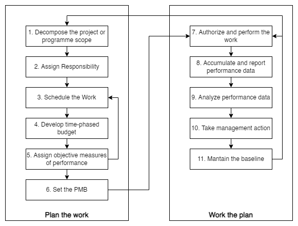
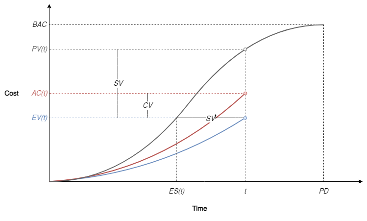

Earned Value Management#
Terms, Definitions, and Abbreviations#
Terms |
Description |
|---|---|
Activity |
Identified piece of work that is required to be undertaken to complete a project or programme |
Actual Cost (of Work Performed) |
Cost incurred for work performed |
Budget at Completion |
Total forecasted cost for accomplishing the work related to a work package, activity, or control account |
Control Account |
Management control point where scope, budget, actual cost, and schedule of a project or programme, work package, or activity are integrated |
Earned Value (Budgeted cost of Work Performed) |
Value of completed work expressed in terms of the budget assigned to that work |
Earned Value Management |
The method that integrates project or programme scope, actual cost, budget, and schedule for assessment of progress and performance |
Estimate at Completion |
Forecasted total cost to accomplish the work on project, programme, work package, or activity |
Estimate to Complete |
Forecasted cost of the work remaining of a project, programme, work package, or activity |
Integrated Baseline Review |
Assessment to establish a common understanding of the performance measurement baseline for verification of the technical content of the project or programme |
Management Reserve |
Amount of budget external to the performance measurement baseline, withheld for management control in response to unforeseen events or activities that are a part of the scope |
Network Schedule (Diagram) |
Graphical representation indicating the logic sequencing and interdependencies of the work elements of a project or programme |
Performance Measurement |
Quantitative units of measure that are placed to track progress |
Performance Measurement Baseline |
Total time-phased scope of work and budget plan against which project or programme performance is measured, not including management reserve |
Planned Value (Budgeted Cost of Work Scheduled) |
Time-phased budget authorized for the work scheduled |
Technical Performance |
The measure of the results of functionalities or capabilities achieved for the project or programme during implementation |
Time-phased Budget |
Allocation of the cost to accomplish the work over established periods of time or phases |
Undistributed Budget |
Cost for authorized work that has not been distributed to a control account |
Work Breakdown Structure |
Decomposition of the defined scope of the project or programme into progressively lower levels consisting of elements of work |
Work Package |
One or more groups of related activities that are within the control account |
Overview#
Earned Value Management#
Earned value management (EVM)
is a structured method used to provide a performance measurement system for review of past and forecasted performance of a project or programme;
is a method of performance management.
Performance management should provide for the planning, implementing, and controlling of the performance of a project or programme in accomplishing the scope of work of the project or programme.
Purpose and Benefits of EVM#
The purpose of EVM is to control and analyze the project or programme.
EVM facilitates analysis and decision-making for but is not limited to budget, schedule, human resources, and materials.
The EVM system may include communication of the status from metrics established for the project or programme, improvements, corrective action development, and a common framework and vocabulary.
An EVM is a set of procedures, tools, and methods for establishing and maintaining project or programme control.
The application of EVM should result in three overall benefits:
developing objective measurement techniques;
availability of data for project or programme management decisions;
providing a system to monitor the project or programme.
Specific benefits may include, but are not limited to, the following:
forecasting of future performance and EAC based on past performance;
objective metrics for comparison of project or programme performance across an organization and between or among organizations;
development of budgets and baselines;
compilation of estimates;
objective measurement of completion of work packages that is done consistently;
comparison of work performed against actual performance and budget;
highlighting inconsistencies in the measures in EV reports;
consistency of the reporting and performance measurement framework by regular earned value reporting.
Guidelines for an EVM System#
An EVM system should provide consistent performance metrics.
To achieve a consistent view of performance metrics, the system should integrate the baselines established for the project or programme including the scope of work defined through the work breakdown structure and performance measurement baseline.
The system should also allow for formal, controlled incorporation of changes in baselines, authorized users, and procedures.
To implement an EVM system,
the project or programme control metrics and processes should be documented and understood by the organization or organizations doing the work;
the system should be established to allow systematic review of the data, common assessment methodologies, targeted levels of performance, and an assessment feedback process;
the system may be tailored to accommodate different project or programme subject area integration, more than one organization reporting, and another tailoring as deemed necessary to control the project or programme or provide an integrated programme view.
The core data contained in an earned value management system should be the earned value, actual cost, the planned value, estimate to complete, and budget at completion.
The EVM system should be able to show the planned status and the actual status of the project or programme.
To implement an earned value management system, the system requires a common agreement on the assignment of “value” and “performance”, which may be tailored for projects or programmes based on organizational considerations.
The review of metrics of performance should be accomplished on a regular, scheduled basis to allow for comparison and analysis of performance.
An EVM system should be able to do the following:
determine what work is to be accomplished, by whom and when;
establish resource requirements;
measure work achievement and record associated costs;
report deviations from the plan for which metrics have been established;
forecast the completion date and cost;
plan and implement corrective and preventive action plans;
authorize scope changes; any approved changes to the prior approved baselines contained in the earned value management system should be controlled, traceable, and documented.
EVM Planning#
EVM planning should enable:
establishing project or programme objectives, as well as the integrated view of the planning of the overall projects or programmes,
monitoring of project or programme progress to measure deviations from the plan, and
planning by the users of the performance management system for project or programme, objective assessment of progress, and use of resources.
Using EVM Measurements and Performance Metrics#
EV should be used to determine performance metrics to assess the status of a project or programme at a selected point in time.
These metrics should enable informed decisions about the management of the project or programme.
The metrics derived may be used to compare actual project or programme cost and schedule performance with the PMB.
The PMB should establish variance thresholds for cost and schedule that, when exceeded, identify significant variances for further analysis and management attention.
The information acquired by using the earned value performance measurements should be used to determine:
progress of a project or programme,
progress towards work accomplished,
completion of the deliverables, and
progress towards delivery of a project or programme. These measurements, combined with the agreed-upon variance threshold, should be used to determine the cost and schedule variances and cost and schedule performance indices.
The information should also be used to forecast the future performance of the project or programme.
EVM Process Steps#
General#
The earned value management process steps are shown in Figure 1.
 |
|---|
Figure 1 — EVM process steps |
Cost and Schedule Performance Analysis#
General#
Analysis of performance metrics is an important approach to measuring and understanding the current period and overall project or programme performance. The use of performance metrics should allow corrective and preventive actions to be implemented, thereby improving the use of the EVM system data.
Performance Measurement Indicators and Predictors#
To understand performance measurement analysis, it is important to know the metrics of indicators and predictors earned value uses. Table 1 summarizes the key EV cost performance indicators and predictors.
Acronym |
Name |
Formula |
|---|---|---|
\(t\) |
Time |
|
\(PD\) |
Planned Duration |
\(\sum_{t} t\) |
\(WS{(t)}\) |
Percentage of Work Scheduled |
|
\(WP{(t)}\) |
Percentage of Work Performed |
|
\(AC{(t)}\) |
Actual Cost of Work Performed |
|
\(EV{(t)}\) |
Earned Value |
\(BAC \cdot WP{(t)}\) |
\(PV{(t)}\) |
Planned Value |
\(BAC \cdot WS{(t)}\) |
\(BAC\) |
Budget at Completion |
\(\sum_{t} PV{(t)}\) |
\(CV{(t)}\) |
Cost Variance |
\(EV{(t)} - AC{(t)}\) |
\(SV{(t)}\) |
Schedule Variance |
\(EV{(t)} - SV{(t)}\) |
\(CPI{(t)}\) |
Cost Performance Index |
\(EV{(t)} / AC{(t)}\) |
\(SPI{(t)}\) |
Schedule Performance Index |
\(EV{(t)} / PV{(t)}\) |
\(EAC{(t)}\) |
Estimate at Completion |
\(EAC{(t)} = AC{(t)} + ETC{(t)}\) |
\(ETC{(t)}\) |
Estimate to Complete |
\(ETC{(t)} = [BAC - EV{(t)}]/PF{(t)}\) |
\(TCPI{(t)}\) |
To-Complete Performance Index |
\(TCPI{(t)} = [BAC - EV{(t)}]/[BAC - AC{(t)}]\) |
\(TCPI{(t)} = [EAC{(t)} - EV{(t)}]/[BAC - AC{(t)}]\) |
||
\(ES{(t)}\) |
Earned Schedule |
\(ES{(t)} = \begin{Bmatrix} t^* : PV(t^*) = EV{(t)}\end{Bmatrix}\) |
\(SV^{t}{(t)}\) |
Earned Schedule Variance |
\(SV^\text{t}{(t)} = ES{(t)} - t\) |
\(SPI^\text{t}{(t)}\) |
Earned Schedule Performance Index |
\(SPI^\text{t}{(t)} = ES{(t)} / t\) |
\(TEAC\) |
Time Estimate at Completion |
\(TEAC{(t)} = AT + ETC^\text{t}{(t)} / PF^\text{t}{(t)}\) |
\(ETC^\text{t}{(t)}\) |
Time Estimate to Complete |
\(ETC^\text{t}{(t)} = [PD - ES{(t)}]/PF^\text{t}{(t)}\) |
\(TCPI^\text{t}{(t)}\) |
To-Complete \(ES\) Performance Index |
\(TCPI^\text{t}{(t)} = [PD - ES{(t)}]/(PD - t)\) |
\(TCPI^\text{t}{(t)} = [TEAC{(t)} - ES{(t)}]/(PD - t)\) |
Benefits of Performance Measurement Analysis#
Performance measurement analysis contributes to trend analysis over time; to highlight trends in cost over- or under-run; and be superimposed with contracted cost outcomes, risk confidence limits, and benefit realization data to provide a more comprehensive picture of overall project or programme cost performance.
Large, early, unfavorable schedule variances, irrespective of cost performance, may be a reliable warning of a project experiencing significant performance issues that should be investigated to determine the causes and implement corrective and preventive recovery actions.
Cost Performance Measurements#
A negative \(CV\) and \(CPI\) of less than one indicates an unfavorable over-budget condition, as the \(EV\) accrued is less than the costs incurred.
Conversely, a positive \(CV\) and \(CPI\) greater than one indicates an under-spend condition.
Significant negative or positive CVs should be investigated to determine the causes and initiate discussions as to whether to implement corrective and preventive actions to prevent further deterioration and implement possible cost recovery.
The \(CPI\) is a ratio that provides a measure of the cost efficiency achieved by the project to date.
The \(TCPI\) is a forward-looking predictor that calculates the future cost efficiency required to achieve specific cost objectives at project or programme completion.
The usual cost objectives analyzed should be the project or programme approved \(BAC\) and, if different, the project or programme manager’s claimed cost estimate at completion.
The \(EAC\) is a predictive measure that calculates predicted completion costs based on the historical performance of the project to date.
One should produce a range of calculated completion cost outcomes using the \(CPI\), \(SPI\), or both indices in combination as performance factors.
These outcomes may be used to assess the likelihood of the project or programme achieving the approved BAC, and the project or programme manager’s claimed cost \(EAC\).
Schedule Performance Measurements#
The traditional earned value schedule performance measurements are also cost-based measures that compare the volume of work performed to the volume of work planned.
A negative \(SV\) and \(SPI\) of less than one indicates an unfavorable behind-schedule condition, subject to confirmatory analysis of the network schedule, as the volume of work accomplished, \(EV\) accrued, is less than the volume of work planned, PV.
Conversely, a positive \(SV\) and \(SPI\) greater than one may indicate an ahead-of-schedule condition, subject to confirmatory analysis of the project network schedule.
Significant SVs should be investigated to understand the causes and to implement corrective and preventive actions.
Analysis of the earned value schedule metrics should be undertaken in conjunction with analyzing the network schedule, which remains the primary source of time-based information.
The critical path impact of negative \(EV\) schedule variances should be analyzed in conjunction with the network schedule.
The predictive utility of the \(SV\) will be lost in the final third of the project.
As the project or programme gets closer to completion, the \(SV\) of the project or programme moves closer to zero, otherwise known as reversion to zero.
Earned Schedule#
Earned Schedule (ES) is an extension of EVM.
ES calculates schedule metrics and indicators on the time axis rather than on the cost axis traditionally utilized by the EVM schedule metrics.
The basis of ES is to identify the time increment at which the amount of \(EV\) accrued should have been earned.
The time increment can be any selected unit of accrual for the \(EV\), such as a week, month, or any other time period.
Once this value has been determined, a series of time-based metrics can be calculated, which emulates the \(EV\) cost-based counterparts.
The ES metric, \(SV^\text{t}\), should be calculated by reference to the actual time, that is, the time increment at the project or programme status date.
The actual time, \(t\), is an unconstrained measure, in the same way as \(AC\).
The ES metrics should be reliable for early and late finish projects or programmes, as \(SV^\text{t}\) only equals zero and \(SPI^\text{t}\) only equals one at the project or programme completion if on-time completion has been achieved.
Analysis of the ES metrics should be undertaken in conjunction with an analysis of the network schedule, which remains the primary source of time-based information.
 |
|---|
Figure 2 — Cost, Schedule, and Earned Schedule Variances |
Summary#
| SPI | ||||
|---|---|---|---|---|
| >1 | =1 | <1 | ||
| CPI | >1 | Under budget Ahead of schedule | Under budget On schedule | Under budget Behind schedule |
| =1 | On budget Ahead of schedule | On budget On schedule | On budget Behind schedule | |
| <1 | Over budget Ahead of schedule | Over budget On schedule | Over budget Behind schedule | |